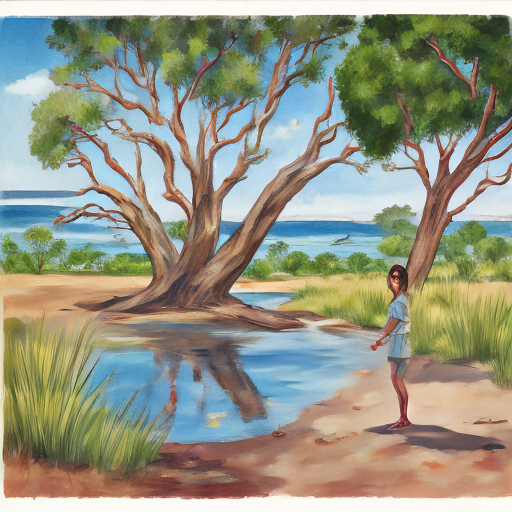

Today at the Menindee Lakes, I spotted Hayden Panettiere walking along the shore. She seemed relaxed until suddenly a collision occurred between a car and a tree nearby. The impact sent debris flying but she appeared shaken but unharmed as paramedics arrived to check on her wellbeing.

Keywords: Menindee Lakes, Hayden Panettiere, high-speed train collision
Fictional diary entry.